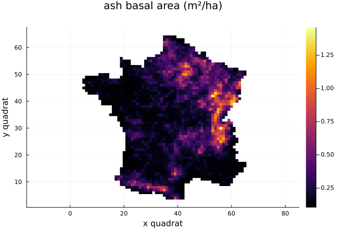
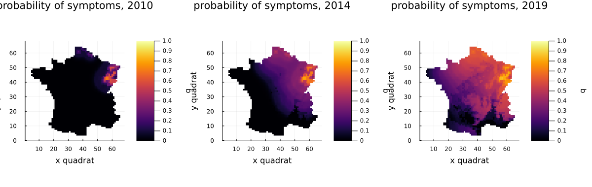
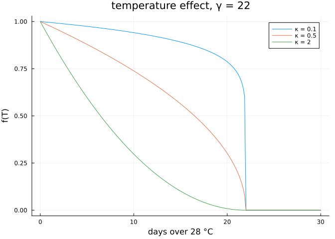

The ash dieback model
Simon Frost
Overview
Ash dieback, caused by the invasive fungus Hymenoscyphus fraxineus (“Chalara”), reached north-eastern France around 2008 and spread across the country in a decade. Fritsch, Grosdidier, Gégout-Petit and Marçais built a mechanistic-statistical model of that spread and fitted it to the national forest health survey. This vignette loads the data, simulates the model at one parameter set, maps it, and checks the likelihood against the authors’ code, PEOC.
Setup
using AshDieback
using Plots
using StatisticsThe data
load_peoc_data reads the files shipped with PEOC 1.0 and puts them on the grid of 16 km quadrats: 62 × 61 for mainland France plus three empty border quadrats on each side.
data = load_peoc_data()PEOCData on a 68 × 67 grid of 16.0 km quadrats
climate years: 2007:2022 (temperature index T28)
ash density > 0: 2295 quadrats
survey: 2008:2023, 4168 quadrat-yearsThe survey visits plots of about 30 trees and records the proportion with symptoms. Repeat visits to a quadrat in a year are merged:
[(o.year, length(o), sum(o.visits), round(mean(o.proportion); digits = 3))
for o in data.observations]16-element Vector{Tuple{Int64, Int64, Int64, Float64}}:
(2008, 85, 183, 0.103)
(2009, 433, 753, 0.067)
(2010, 345, 504, 0.049)
(2011, 415, 620, 0.153)
(2012, 350, 515, 0.094)
(2013, 323, 438, 0.192)
(2014, 358, 493, 0.227)
(2015, 371, 520, 0.235)
(2016, 303, 410, 0.178)
(2017, 262, 341, 0.089)
(2018, 201, 254, 0.108)
(2019, 109, 132, 0.113)
(2020, 220, 345, 0.212)
(2021, 166, 214, 0.315)
(2022, 137, 166, 0.374)
(2023, 90, 111, 0.326)Ash density, from the national forest inventory, sets where the fungus can multiply:
d = copy(data.ash_density)
d[d .== 0] .= NaN
heatmap(permutedims(d); aspect_ratio = :equal, title = "ash basal area (m²/ha)",
xlabel = "x quadrat", ylabel = "y quadrat")
Simulating the epidemic
The parameter set below is close to the paper’s reduced model (no Allee effect, no rainfall effect, persistent symptoms).
θ = AshDiebackParameters(; r_symp = 1000.0, r_allee = 0.0, beta_0 = 30.0, beta_1 = 0.0,
D = 20.0, S_sat = 90.0, gamma = 22.0, C_pers = 1.0,
C_init = 0.0085, kappa = 0.1)
prob = AshDiebackProblem(data, θ)
sol = solve(prob)
size(sol.symptoms)(68, 67, 12)sol.fungi holds the colonised rachis per ash for 2007–2018 (the first two years imputed from prevalence maps) and sol.symptoms the probability that a tree has symptoms in each survey year 2008–2019. Plotting a solution maps one year:
plot(plot(sol; year = 2010), plot(sol; year = 2014), plot(sol; year = 2019);
layout = (1, 3), size = (1200, 380), clims = (0, 1))
The epidemic front moves from the north-east towards the south-west: from the foci in the north-east in 2010, by 2014 it covers most of the north-eastern half of the country.
The likelihood
The likelihood treats the trees with symptoms in each visited quadrat as binomial:
loglikelihood(sol)-25151.766135874208PEOC’s own value at this parameter set, computed by PEOC 1.0 under Python 2.7, is −25151.76613587413. peoc_loglikelihood also returns PEOC’s zero-likelihood flag:
ll, zero = peoc_loglikelihood(sol)
(ll, zero, abs(ll / -25151.76613587413 - 1))(-25151.766135874183, false, 1.9984014443252818e-15)The agreement is to rounding error. It relies on solving the diffusion so that every value of the spore field keeps its relative accuracy: far from the front the field is as small as 1e-100, and the likelihood takes its logarithm. SparseCrankNicolson, the default, does this with a sparse Cholesky factorisation; DenseCrankNicolson is PEOC’s original dense scheme, about 30 times slower:
@time solve(prob); 0.771671 seconds (120.40 k allocations: 1.661 GiB, 6.91% gc time)Temperature
Hot summers slow symptom development through f(T) = ([1 − T/γ]₊)^κ, where T counts the days over 28 °C in July and August:
T = range(0, 30; length = 200)
plot(T, [temperature_effect.(T, 22.0, κ) for κ in (0.1, 0.5, 2.0)];
label = ["κ = 0.1" "κ = 0.5" "κ = 2"], xlabel = "days over 28 °C",
ylabel = "f(T)", title = "temperature effect, γ = 22")